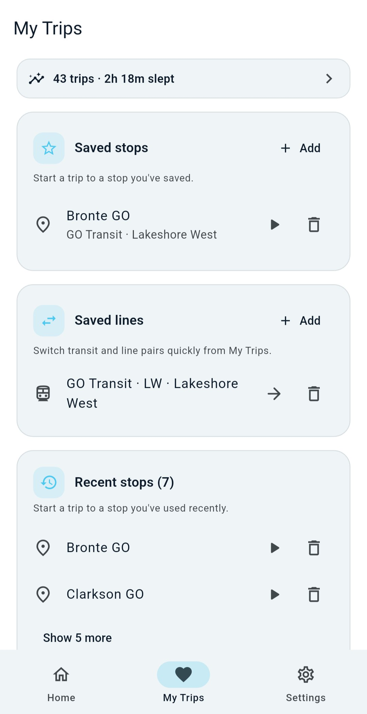
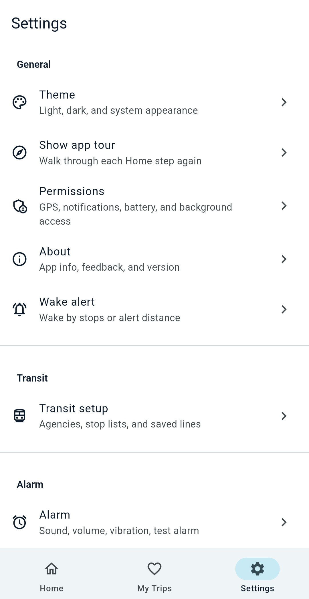
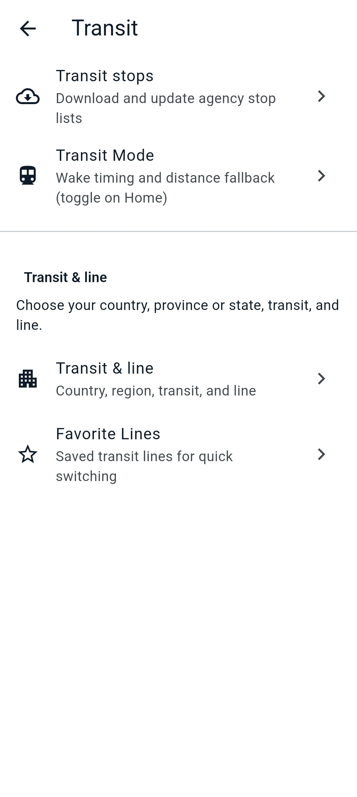
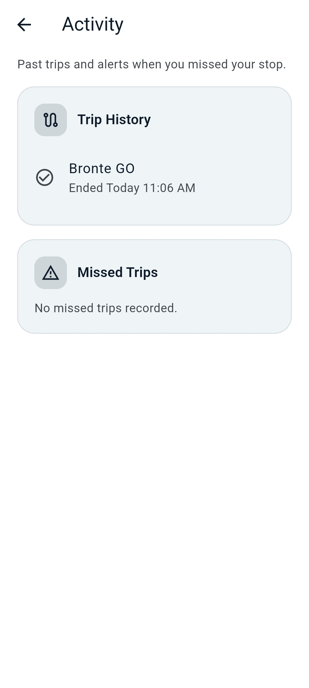
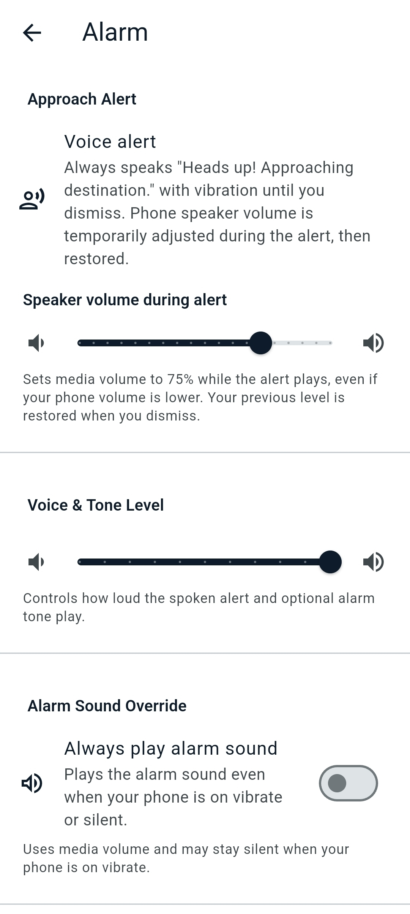

App tour
Sleep peacefully. Arrive confidently.
DozeAlert is a commute alarm for riders who want to rest without missing their stop. Pick your transit, set a destination, start monitoring, and get a reliable wake-up on GO Transit, TTC, and other supported agencies. No account required — trip data stays on your device.
Your commute alarm
A focused home screen keeps destination, monitoring, and Transit Mode in one place.

Wake up before your stop
DozeAlert monitors your trip in the background and alerts you as you approach your destination — on a train, bus, or any ride where GPS works.
Quick first-time setup
Three short steps: welcome, pick the transit you ride (one or more), then grant permissions with guided prompts. Stop lists download in the background for each agency you select.

Welcome
A brief intro explains what DozeAlert does and what comes next — selecting transit, granting permissions, and a guided Home tour.

Pick your transit
Select all agencies you ride — for example TTC and GO Transit on the same day. Your default shows on Home first; switch anytime with Choose transit & line.

Guided permissions
A five-step checklist walks through GPS, location (while using + all the time), notifications, and battery. Plain-language prompts tell you exactly what to tap on each Android screen.
Choose transit & line
Filter routes by bus or train, search by number or name, and see the full line label on Home — for example GO Transit - LW - Lakeshore West.

Guided Home tour
After setup, a four-step tour on Home shows where to confirm transit & line, set your destination, adjust wake timing, and start monitoring.

Route picker
Open Choose transit & line from Home to filter by vehicle type and search routes from downloaded stop lists. Tap Transit & line settings for country, region, and defaults.
Set your destination
Pick a stop on your line, reuse a favorite or recent destination, or switch a saved transit line during a transfer.

Set destination
Tap Set destination on Home to pick a stop on your line, jump to a favorite, open recents, or quick-switch a saved line pair.

Pick a stop
Search and filter stops on your selected route, or browse all routes at a station. Downloaded stop lists power offline search and Transit Mode progress.
Start monitoring
Review the readiness checklist, confirm “Ready to rest?”, then relax. DozeAlert tracks your trip and shows progress on Home and in your notification shade.

Ready to rest?
Before monitoring begins, a short confirmation reminds you to keep volume on and your phone charged. Tap Start my trip when you are settled.

Stop-by-stop progress
With Transit Mode on, Home shows stops remaining, your next stop, and distance along the route. Wake timing uses stops when you are on your line, and falls back to your wake radius when GPS is the better signal.

Background monitoring
An ongoing notification keeps you informed while the phone is locked — destination name and distance remaining at a glance.
Favorites & quick restarts
Stations and lines you use often stay one tap away on the Favorites tab (heart icon). Recent destinations appear automatically for fast restarts.

Favorites tab
Save favorite stops and line pairs for quick access. Tap play on any item to set it and jump back to Home. Long lists stay compact — show a few entries, then expand to see the rest.
- Favorite destinations with transit badges
- Favorite lines for quick switching during transfers
- Recent destinations for one-tap restarts
Settings & Activity
Transit stop downloads, Transit Mode timing, trip history, and missed-trip alerts live in Settings. No ads, no data sale.

Transit settings
Download and update agency stop lists under Transit stops. Configure Transit Mode wake timing, set country/region/transit/line defaults, and manage favorite lines.

Transit & line
Choose country, province or state, transit, and line. Filter by vehicle type and search routes from downloaded stop lists. GTFS data enables offline stop search and Transit Mode.

Activity
Review completed trips and any missed-stop alerts under Settings → Activity. Trip history and missed trips moved here from the main tabs so Home and Favorites stay focused on your next ride.
Reliable wake alerts
Voice, vibration, and optional alarm tone wake you before you miss your stop. Volume is boosted during the alert, then restored when you dismiss.

Approach alerts
A spoken “Heads up! Approaching destination.” plays with vibration until you dismiss. Adjust speaker volume during the alert and control voice and tone levels separately. Optionally force the alarm sound even when the phone is on silent.
Ready to try it?
Download DozeAlert for Android and set your first destination in under a minute.
Download APKAlso search DozeAlert on Google Play when available in your region.